I designproductspeopletrust.
I turn complex financial products into clear, intuitive experiences, bringing together product strategy, human behaviour and thoughtful design to solve problems that matter.
Case studies
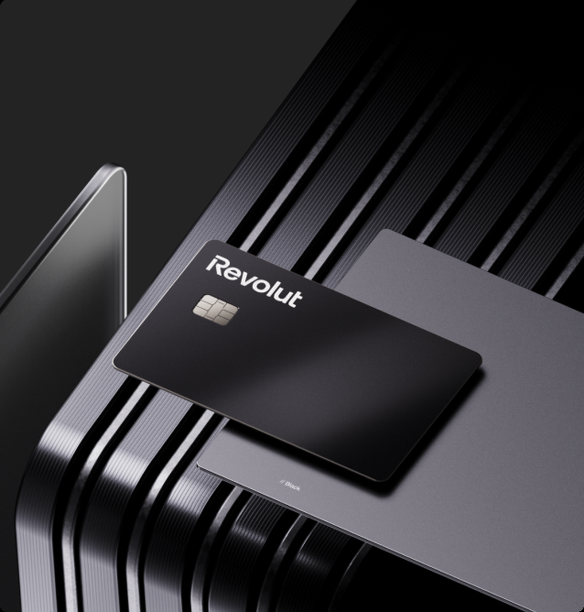
Designing regulated lending journeys, from mortgages to credit card repayment, inside one of Europe’s biggest fintech apps.
View case study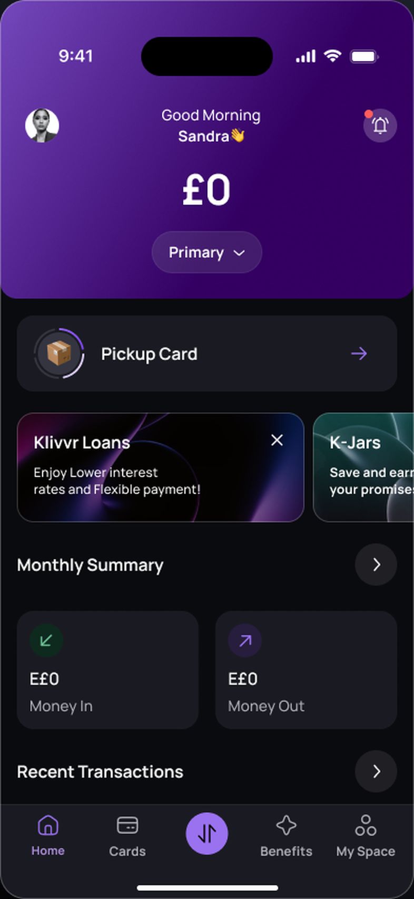
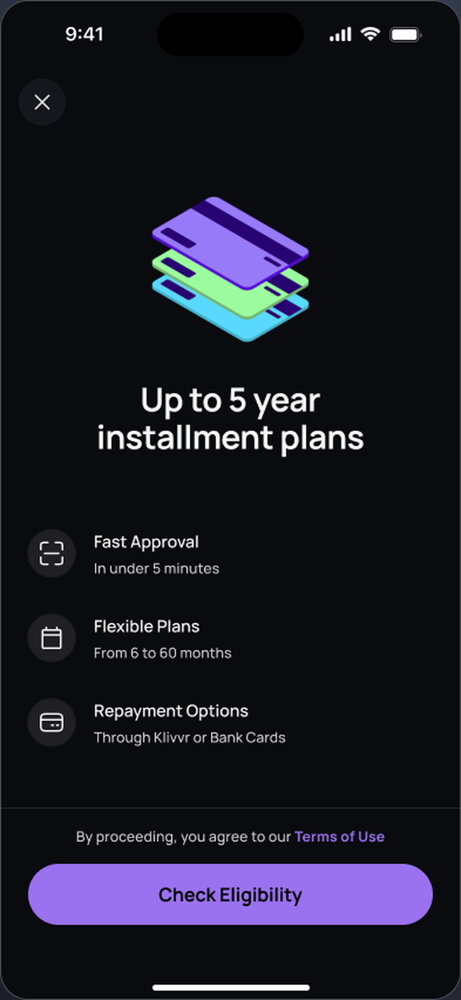
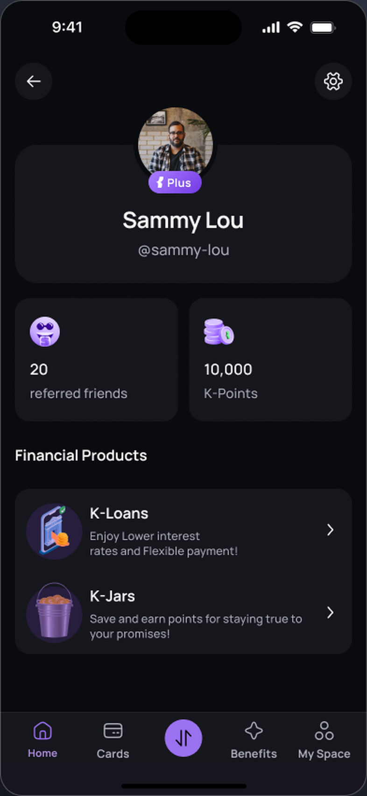
A lending application designed to be finished. I brought lending into Klivvr’s app with a guided flow that tells people where they stand at every step.
View case study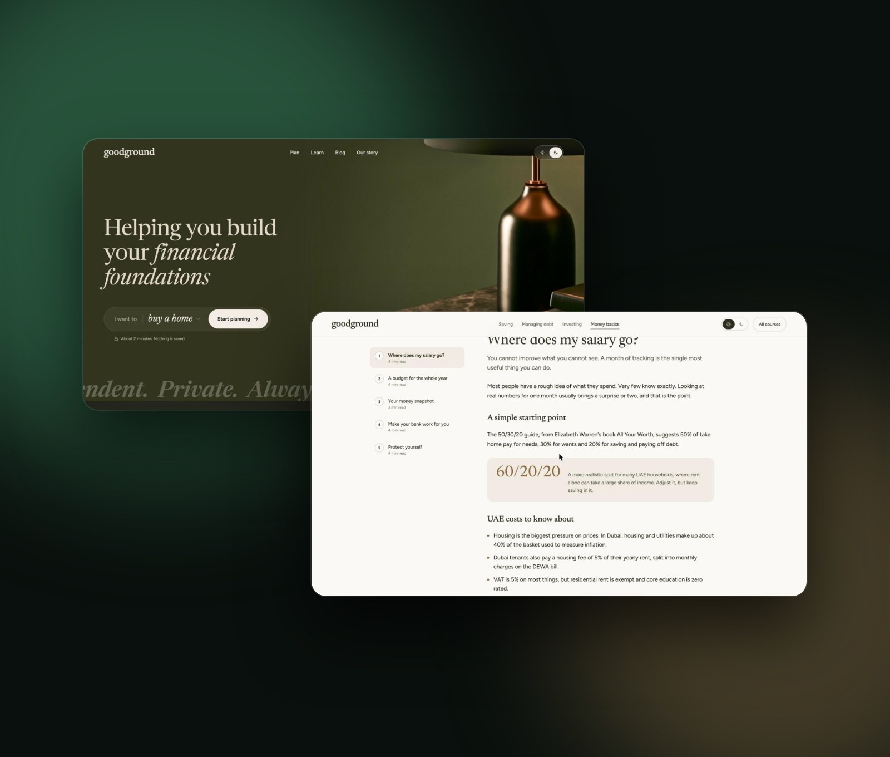
A free, private planner for people in the UAE. I researched, designed and launched it to help people see where they stand and plan a first home.
View case study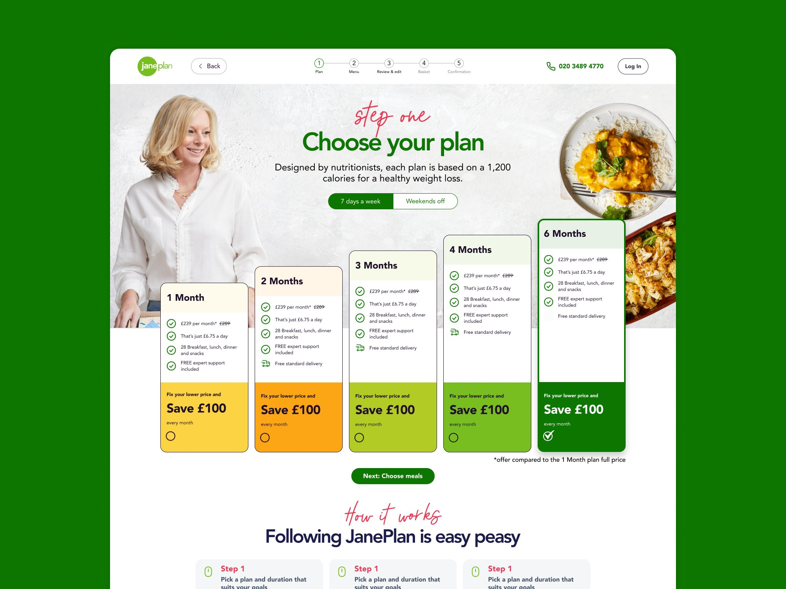
I redesigned Jane Plan’s checkout and subscription funnel to make signing up for a meal plan feel calm and reassuring.
View case study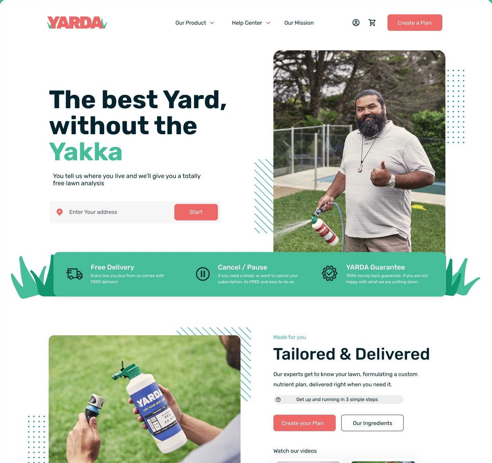
I redesigned Yarda’s brand and funnel, turning a long lawn survey into a short, personal path to a nutrient plan.
View case study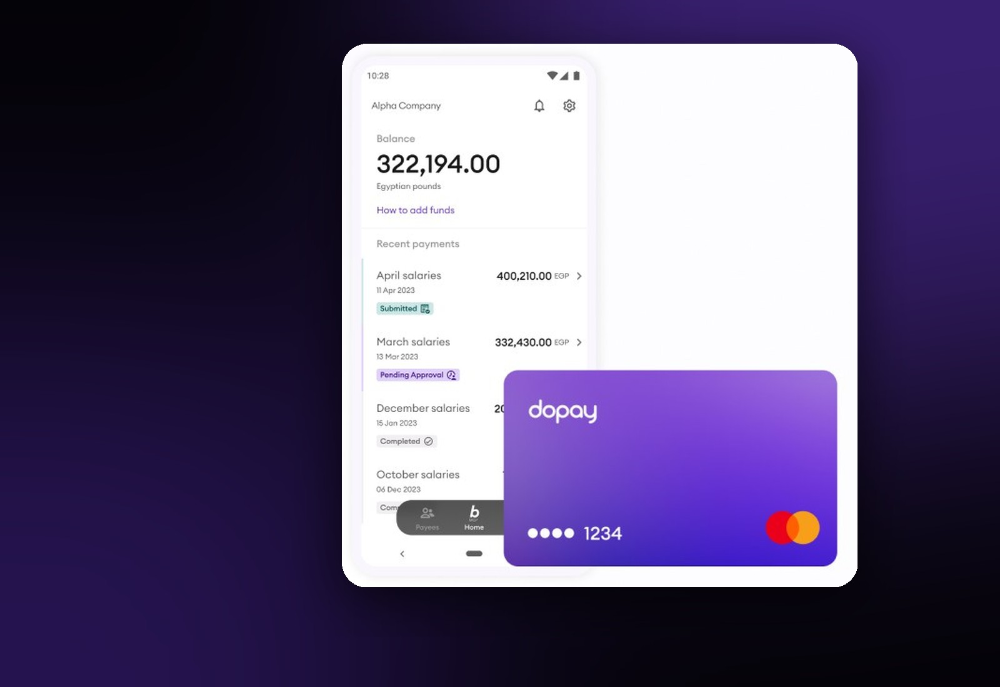
I redesigned the dopay website, built its design system, designed the funnel and the self onboarding flow, and advised on product.
View case study
One website for two audiences. I redesigned Logpoint’s digital platform for security buyers and engineers under one clear brand.
View case study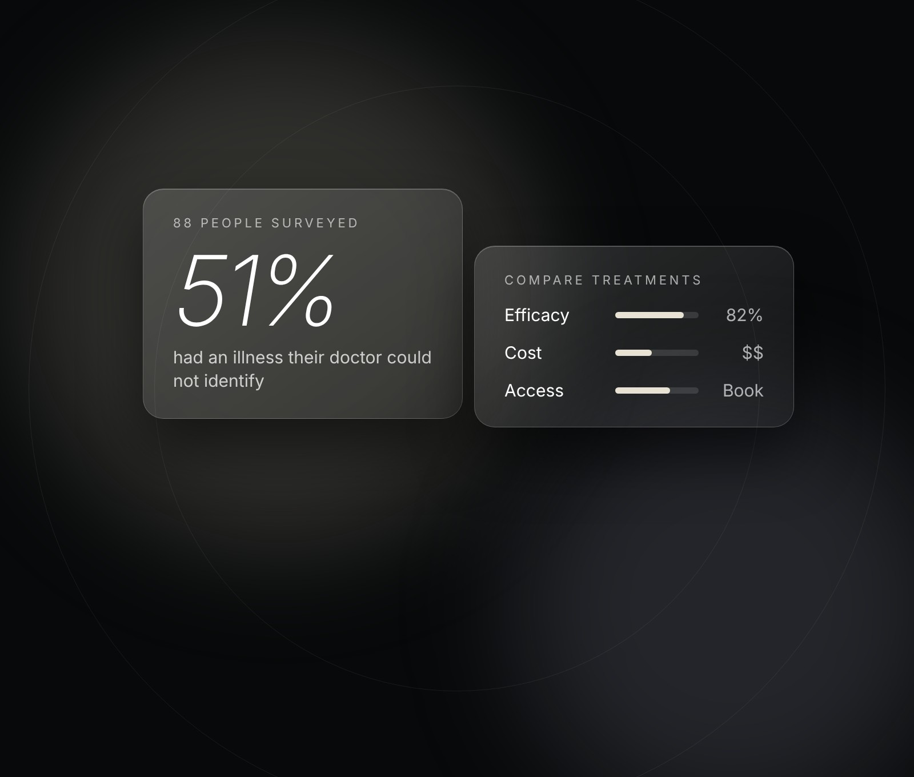
A platform for people the system could not diagnose. I founded Heal and designed it from research to MVP, comparing treatments on cost and efficacy with booking built in.
View case studyWhat people say
Malak is a great professional. I worked directly with her while we were designing the mortgages product at Revolut. She is a great thinker and…Read more
Malak is a great professional. I worked directly with her while we were designing the mortgages product at Revolut. She is a great thinker and executor, always highly engaged in discussions and bringing valuable perspectives to the table. She has a great ability to balance business needs with user problems, which made her a fantastic person to work with.
I worked with Malak on the Credit team over the past year, where she was designing for the mortgage experience. She’s great at working in a…Read more
I worked with Malak on the Credit team over the past year, where she was designing for the mortgage experience. She’s great at working in a fast-paced environment, managing stakeholder feedback and delivering quality design at speed. Even though we worked in a high-pressure environment with a rapid delivery pace, she always took the time to think deeply about the problem space and bring strategic thinking to her work. She’s also a supportive teammate who is always happy to share feedback and support her peers. I really enjoyed working with Malak. She’s an incredible designer with strong craft and strategic thinking, who can balance pressure, speed and quality really well.
I really enjoyed working with Malak. We worked together on purpose loans, a loan calculator, and several ideas for new credit products. She’s very…Read more
I really enjoyed working with Malak. We worked together on purpose loans, a loan calculator, and several ideas for new credit products. She’s very good at taking something complex and turning it into a simple, clear experience. She also has strong product thinking, asks the right questions, and always brings useful ideas to the discussion. On top of that, she’s easy to work with, reliable, and a great partner for the whole team. I’d happily work with her again.
Impressive performance in the workshop today, a really steady hand for a new joiner! Calm and controlled, it was great! Well done and thank you for…Read more
Impressive performance in the workshop today, a really steady hand for a new joiner! Calm and controlled, it was great! Well done and thank you for your commitment to our mortgages product. I know end of quarter can suck with demands, but having a teammate like you makes it easier!!
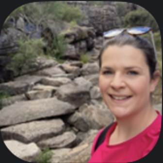
Una BarrettSenior Product and Operations Manager at RevolutI was working with Malak on revamping the dopay website. She brought a great balance of creativity, structure, and user centric thinking to the…Read more
I was working with Malak on revamping the dopay website. She brought a great balance of creativity, structure, and user centric thinking to the project. From the very beginning, she took the time to deeply understand our brand, our audience, competitors and the complexity of our product, then translated that into a clean, intuitive, and modern design. Her ability to combine UX strategy elevated the project far beyond our expectations. She was organized, punctual, proactive, collaborative, and always open to feedback. Thanks to her efforts, we will be having a website that not only reflects dopay’s brand identity but also delivers a seamless experience to our users. I would highly recommend Malak to any team looking for a talented, reliable, and thoughtful Senior product designer. She is truly a pleasure to work with, keep up the great work Malak!
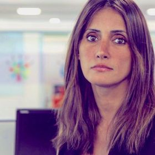
Samah El-NaggarMarketing Director at dopayMalak, has a sound understanding of design principles and can take a project from concept to delivery with ease. She is not afraid to question and…Read more
Malak, has a sound understanding of design principles and can take a project from concept to delivery with ease. She is not afraid to question and always looks for improvements to the customer experience.
I collaborated with Malak for a couple of years at Shoreditch Design Studio. Throughout our time together, she consistently demonstrated a fantastic…Read more
I collaborated with Malak for a couple of years at Shoreditch Design Studio. Throughout our time together, she consistently demonstrated a fantastic eye for design, complemented by strong UX/UI skills. In addition, Malak proved to be an invaluable asset to the team, showcasing excellent communication skills in direct interactions with clients.
I worked with Malak on a team project, she was a great team member and proposed a number of valuable ideas throughout the project. She took…Read more
I worked with Malak on a team project, she was a great team member and proposed a number of valuable ideas throughout the project. She took responsibility for decisions and develop a hi -quality prototype to deliver to the client. Would love to work with her again.
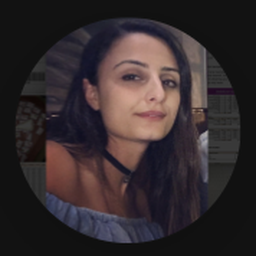
Adele BrizziUX DesignerI worked with Malak on couple of projects. She has an excellent leadership skills when it comes to managing a project and team. She consistently…Read more
I worked with Malak on couple of projects. She has an excellent leadership skills when it comes to managing a project and team. She consistently demonstrated her solid work ethic and problem solving skills throughout the project. She is a great asset to any UX team!
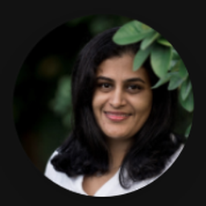
Priya VenugopalMarketing Coordinator | Graphic Designer | Product Designer (UX/UI)I worked with Malak on the Collabor8 Thinkspace project. She’s a driven, ambitious individual with a strong enthusiasm for the project. A skilled UX…Read more
I worked with Malak on the Collabor8 Thinkspace project. She’s a driven, ambitious individual with a strong enthusiasm for the project. A skilled UX and UI designer that can turn a concept into reality upon client requests. Malak was dedicated to delivering high-quality works. She’s truly a user experience professional, knowing and working with Malak is a very pleasurable experience. Malak has an impressive work ethic that I would recommend her to any team!
I worked with Malak on a UX team project for Collabor8 Thinkspace. From the outset I was impressed by her pragmatic approach to understanding and…Read more
I worked with Malak on a UX team project for Collabor8 Thinkspace. From the outset I was impressed by her pragmatic approach to understanding and solving the problem space, always putting the user at the centre of any design thinking. She provided the team with in depth research and valuable insights early on in the project before taking a leading role in developing, designing and testing user focused solutions within design software. She communicates her thoughts clearly and always has something of value to say, this makes working with Malak really enjoyable and I would look forward to working with her again. She was a valuable member of the team and would be an asset to any UX team in the future.
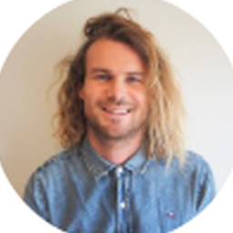
Aidan StreetAccount Manager at me&uI managed Malak when she interned at SEO Melbourne & found her work ethic to be top notch. She was always pretty interested in learning new things &…Read more
I managed Malak when she interned at SEO Melbourne & found her work ethic to be top notch. She was always pretty interested in learning new things & had a keen eye for User Experience. Malak was very passionate about everything she worked on & I think she's be a great addition to any team that requires help with U/X & design.
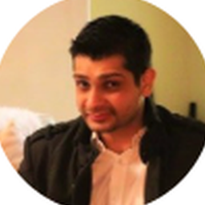
Girish SawlaniDigital Strategy & GrowthMalak and I worked in the same team over two client projects at Academy Xi. In both projects she was extremely organised, kept both the projects…Read more
Malak and I worked in the same team over two client projects at Academy Xi. In both projects she was extremely organised, kept both the projects running smoothly and worked brilliantly with everyone in the team. She worked efficiently, and contributed so much creatively, she has great ideas and a fantastic understanding of the UX process. She was excellent to work with both times, and would be a fantastic addition to any UX team.
Malak is highly organised and insightful in the UX process, she thinks out of the box and has a keen eye for detail. She has a strong work ethic and…Read more
Malak is highly organised and insightful in the UX process, she thinks out of the box and has a keen eye for detail. She has a strong work ethic and is highly motivated individual. She is also a strong communicator with good design skills and a passion for UX.
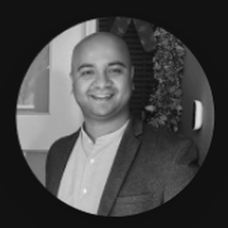
Kenny D'SouzaUX/UI Designer | Department of Justice and Community SafetyMalak is spectacular to work with, she works through the problem with the group and helps point out details that were overlooked, she is highly…Read more
Malak is spectacular to work with, she works through the problem with the group and helps point out details that were overlooked, she is highly motivated and excellent communication skills. She adds great value to any Ui/Ux Team and I would highly recommend her
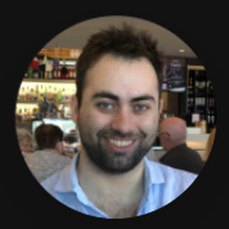
William HumbleUX DesignerFour habits behind every project
Question the brief
I go back to the goal and the user problem before I open a design tool. Many requirements turn out to be assumptions, and finding that early saves the whole team time.
Lower the load
Every screen should ask for less thinking. I cut steps, plain the language and show people where they stand at every moment.
Be honest in the interface
Regulated products carry risk. I design disclosures, rates and limits so people understand them, not so they scroll past them.
Prototype to decide
I build interactive prototypes early and test them with real users. Their feedback shapes the design before anything is built.